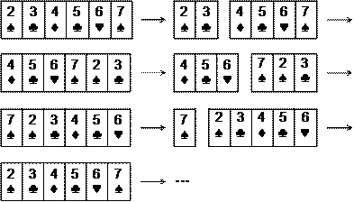
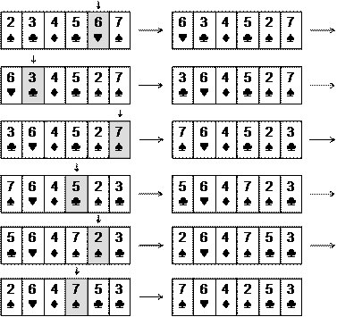
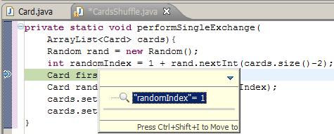
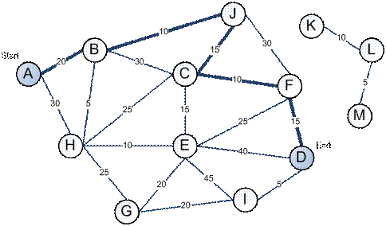
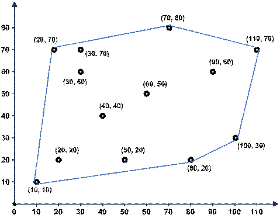

Глава 22. Как да решаваме задачи по програмиране?
Автор
Светлин Наков
В тази тема...
В настоящата тема ще дискутираме един препоръчителен подход за решаване на задачи по програмиране и ще го илюстрираме нагледно с реални примери. Ще дискутираме инженерните принципи, които трябва да следваме при решаването на задачи (които важат в голяма степен и за задачи по математика, физика и други дисциплини) и ще ги покажем в действие. Ще опишем стъпките, през които преминаваме при решаването на няколко примерни задачи и ще демонстрираме какви грешки се получават, ако не следваме тези стъпки. Ще обърнем внимание на някои важни стъпки от решаването на задачи (като например тестване), които обикновено се пропускат. Надяваме се да ви успеем да ви докажем чрез много примери, че за решаването на задачи по програмиране си има "рецепта" и да ви убедим колко много помага тя.
Основни принципи при решаване на задачи по програмиране
Сигурно си мислите, че сега ще ви напълним главата с празни приказки в стил "първо мисли, след това пиши" или "внимавайте като пишете, че да не пропуснете нещо". Всъщност тази тема няма да е толкова досадна и ще ви даде практически насоки как да подхождате при решаването на задачи, независимо дали са алгоритмични или други.
Без да претендираме за изчерпателност, ще ви дадем няколко важни препоръки, базирани на опита на Светлин Наков, който повече от 10 години подред е участвал редовно по български и международни състезания по програмиране, а след това е обучавал на програмиране и решаване на задачи студенти в Софийски университет "Св. Климент Охридски" (ФМИ на СУ), в Нов Български Университет (НБУ) и в Национална академия по разработка на софтуер (НАРС).
Нека започнем с първата важна препоръка.
Използвайте лист и химикал!
Захващането на лист и химикал и скицирането на примери и разсъждения по дадения проблем е нещо съвсем нормално и естествено – нещо, което всеки опитен математик, физик или софтуерен инженер прави, когато му поставят нетривиална задача.
За съжаление, от опита си с обучението на софтуерни инженери в НАРС можем да споделим, че повечето начинаещи програмисти въобще не си носят лист и химикал. Те имат погрешното съзнание, че за да решават задачи по програмиране им е достатъчна само клавиатурата. На повечето им трябват доста време и провали по изпитите, за да достигат до важния извод, че използването на някаква форма на чертеж, скица или визуализация на проблема е от решаваща полза за неговото решаване.
|
|
Който не ползва лист и химикал, ще бъде силно затруднен при решаването на задачи по програмиране. Винаги скицирайте идеите си на хартия или на дъската! |
Наистина, изглежда старомодно, но ерата на хартията все още не е отминала! Най-лесният начин човек да си скицира идеите и разсъжденията е като хване лист и химикал, а без да скицирате идеите си, е много трудно да разсъждавате.
Помислете например колко усилия ви трябват, за да умножавате петцифрени числа на ум и колко по-малко са усилията, ако имате лист и химикал (изключваме възможността да използваме електронни устройства). По същия начин е със задачите – когато трябва да измислите решение, ви трябва хартия да си драскате. Когато трябва да проверите дали решението ви е вярно, ви трябва отново хартия, да си разпишете един пример. Когато трябва да измисляте случаи, които вашето решение изпуска, отново ви трябва нещо, на което да си разписвате и драскате примери и идеи. Затова ползвайте лист и химикал!
Измислете идеи и ги пробвайте!
Решаването на дадена задача винаги започва от скицирането на някакъв пример върху лист хартия. Когато имате конкретен пример, можете да разсъждавате, а когато разсъждавате, ви хрумват идеи за решение на задачата.
Когато вече имате идея, ви трябват още примери, за да проверите дали идеята е добра. Тогава можете да нарисувате още няколко примера на хартия и да пробвате вашата идея върху тях. Уверете се, че идеята ви е вярна. Проследете идеята стъпка по стъпка, така, както ще я изпълни евентуална компютърна програма и вижте дали няма някакви проблеми.
Опитайте се да "счупите" вашата идея за решение – да измислите пример, при който не работи (контра-пример). Ако не успеете, вероятно сте на прав път. Ако успеете, помислете как да се справите с неработещия пример: измислете "поправка" на вашата идея за алгоритъм или измислете напълно нова идея.
За всичко това ви трябват лист, химикал и примери, които да измисляте и да си ги рисувате, след което да си пробвате върху тях различните идеи, които ви хрумват.
|
|
Решаването на задачи по програмиране започва от измислянето на идеи и проверяването им. Това става най-лесно като хванете лист и химикал и скицирате разсъжденията си. Винаги проверявайте идеите си с подходящи примери! |
Горните препоръки са много полезни и в още един случай: когато сте на интервю за работа. Всеки опитен интервюиращ може да потвърди, че когато даде алгоритмична задача на кандидат за работа, очаква от него да хване лист и химикал и да разсъждава на глас като предлага различни идеи, които му хрумват. Хващането на лист и химикал на интервю за работа дава признаци за мислене и правилен подход за решаване на проблеми. Разсъждаването на глас показва, че можете да мислите. Дори и да не стигнете до правилно решение подходът към решаване на задачи ще направи добро впечатление на интервюиращия!
Разбивайте задачата на подзадачи!
Сложните задачи винаги могат да се разделят на няколко по-прости. Ще ви покажем това в примерите след малко. Нищо сложно на този свят не е направено наведнъж. Рецептата за решаване на сложни задачи е да се разбият логически на няколко по-прости (по възможност максимално независими една от друга). Ако и те се окажат сложни, можем да разбием и тях на няколко по-прости. Тази техника е известна като "разделяй и владей" и е използвана още от Римската империя.
Звучи просто на теория, но на практика не винаги е лесно да се направи. Тънкостта на решаване на алгоритмични задачи се крие в това да овладеете добре техниката на разбиването на задачата на по-прости подзадачи и, разбира се, да се научите да ви хрумват добри идеи, което става с много, много практика.
|
|
Сложните проблеми винаги могат да се разделят на няколко по-прости. Когато решавате задачи, разделяйте сложната задача на по-прости, задачи, които могат да се решат самостоятелно. |
Разбъркване на тесте карти – пример
Нека дадем един пример: трябва да разбъркаме тесте карти в случаен ред. Да приемем, че тестето е дадено като масив или списък от N на брой обекти (всяка карта е обект). Това е задача, която изисква много стъпки (серия изваждания, вмъквания, размествания или преподреждания на карти). Тези стъпки сами по себе си са по-прости и по-лесни за реализация, отколкото цялостната задача за разбъркване на картите. Ако намерим начин да разбием сложната задача на множество простички стъпки, значи сме намерили начин да я решим. Именно в това се състои алгоритмичното мислене: в умението да разбиваме сложен проблем на серия по-прости проблеми, за които можем да намерим решение. Това, разбира се, важи не само за програмирането, но и за решаването на задачи по математика, геометрия, физика и други дисциплини. Точно алгоритмичното мислене е причината математиците и физиците много бързо да напредват, когато се захванат с програмиране.
Нека сега се върнем на нашата задача и да помислим кои са елементарните действия, които са нужни, за да разбъркаме в случаен ред картите?
Ако хванем в ръка тесте карти или си го нарисуваме по някакъв начин на лист хартия (например като серия кутийки с по една карта във всяка от тях), веднага ще ни хрумне идеята, че е необходимо да направим някакви размествания или пренареждания на някои от картите.
Разсъждавайки в този дух установяваме, че трябва да направим повече от едно разместване на една или повече карти, защото, ако направим само едно разместване, получената подредба няма да е съвсем случайна. Следователно ни трябват много на брой по-прости операции за единични размествания.
Стигнахме до първото разделяне на задачата на подзадачи: трябват ни серия размествания и всяко разместване можем да разгледаме като по-проста задача, част от решението на по-сложната.
Първа подзадача: единично разместване
Как правим "единично разместване"? На този въпрос има стотици отговори, но можем да вземем първата идея, която ни хрумва. Ако е добра, ще я ползваме. Ако не е добра, ще измислим друга.
Ето каква може да е първата ни идея: ако имаме тесте карти, можем да се сетим да разделим тестето на две части по случаен начин и да разменим едната част с другата. Имаме ли идея за "единично разместване" на картите? Имаме. Остава да видим дали тази идея ще ни свърши работа.
Нека се върнем на началната задача: трябва да получим случайно размесено тестето карти, което ни е дадено като вход. Ако хванем тестето и много на брой пъти го разцепим на две и разменим получените две части, ще получим случайно размесване, нали? Изглежда нашата първа идея за "единично разместване" ще свърши работа.
Втора подзадача: избор на случайно число
Как избираме случаен начин за разцепване на тестето? Ако имаме N карти, ни трябва начин да изберем число между 1 и N-1, нали?
За да решим тази подзадача, ни трябва или външна помощ, или да знаем, че тази задача в Java е вече решена и можем да ползваме вградения генератор на случайни числа наготово.
Ако не се сетим да потърсим в Интернет как в Java се генерират случайни числа, можем да си измислим и наше собствено решение, например да въвеждаме един ред от клавиатурата и да измерваме интервала време между стартирането на програмата и натискането на [Enter] за край на въвеждането. Понеже при всяко въвеждане това време ще е различно (особено, ако можем да отчитаме с точност до наносекунди), ще имаме начин да получим случайно число. Остава въпросът как да го накараме да бъде в интервала от 1 до N-1, но вероятно ще се сетим да ползваме остатъка от деление на (N-1) и да си решим проблема.
Виждате, че дори простите задачи могат да имат свои подзадачи или може да се окаже, че за тях вече имаме готово решение. Когато намерим решение, приключваме с текущата подзадача и се връщаме към оригиналната задача, за да търсим идеи и за нейното решаване. Нека направим това.
Трета подзадача: комбиниране на разместванията
Да се върнем пак на началната задача. Чрез последователни разсъждения стигнахме до идеята много пъти да извършим операцията "единично разместване" в тестето карти докато тестето се размести добре. Това изглежда коректно и можем да го пробваме.
Сега възниква въпросът колко пъти да извършим операцията "единично разместване". 100 пъти достатъчно ли е? А не е ли много? А 5 пъти достатъчно ли е, не е ли малко? За да дадем добър отговор на този въпрос трябва да помислим малко. Колко карти имаме? Ако картите са малко, ще ни трябват малко размествания. Ако картите са много, ще ни трябват повече размествания, нали? Следователно броят размествания изглежда зависи от броя карти.
За да видим колко точно трябва да са тези размествания, можем да вземем един пример. Да вземем стандартно тесте карти. Колко карти има в него? Всеки картоиграч ще каже, че са 52. Ами тогава да помислим колко разцепвания на тестето на две и разменяния на двете половини ни трябват, за да разбъркаме случайно 52 карти. Дали 52 е добре? Ако направим 52 "единични размествания" изглежда, че ще е достатъчно, защото заради случайния избор ще сцепим средно по 1 път между всеки две карти (това е видно и без да четем дебели книги по вероятности и статистика). А дали 52 не е много? Можем да измислим и по-малко число, което ще е достатъчно, примерно половината на 52. Това също изглежда достатъчно, но ще е по-трудно да се обосновем защо.
Някои биха тръгнали с дебелите формули от теорията на вероятностите, но има ли смисъл? Числото 52 не е ли достатъчно малко, за да търсим по-малко. Цикъл от 1 до 52 минава мигновенно, нали? Картите няма да са един милиард, нали? Следователно няма нужда да мислим в тази посока. Приемаме, че правим толкова "единични размествания", колкото са картите и това хем е достатъчно, хем не е прекалено много. Край, тази подзадача е решена.
Още един пример: сортиране на числа
Нека разгледаме накратко и още един пример. Даден е масив с числа и трябва да го сортираме по големина, т.е. да подредим елементите му в нарастващ ред. Това е задача, която има десетки концептуално различни методи за решаване и вие можете да измислите стотици идеи, някои, от които са верни, а други – не съвсем.
Ако имаме тази задача и приемем, че е забранено да се ползват вградените в Java класове за сортиране, е нормално да вземем лист и химикал, да си направим един пример и да започнем да разсъждаваме. Можем да достигнем до много различни идеи, примерно:
- Можем да изберем най-малкото число, да го отпечатаме и да го изтрием от масива. След това можем да повторим същото многократно докато масивът свърши. Разсъждавайки по тази идея можем да разделим задачата на няколко по-прости задачки: намиране на най-малко число в масив; изтриване на число от масив; отпечатване на число.
- Можем да вземем най-малкото число и да го преместим най-отпред (чрез изтриване и вмъкване). След това в останалата част от масива можем пак да намерим най-малкото число и да го преместим веднага след първото. На k-тата стъпка ще имаме първите k най-малки числа в началото на масива. При този подход задачата се разделя по естествен начин на няколко по-малки задачки: намиране на най-малко число в част от масив и преместване на число от една позиция на масив в друга. Последната задачка може да се разбие на две по-малки: "изтриване от масив" и "вмъкване в масив").
- Можем да подходим и коренно различно: да разделим масива на две части с равен брой елементи, след което да сортираме първата част, да сортираме втората част и накрая да обединим двете части. Можем да приложим същото рекурсивно за всяка от частите докато не достигнем до част с големина един елемент, който очевидно е сортиран. При този подход имаме пак разделяне на сложната задача на няколко по-прости подзадачи: разделяне на масив на две равни (или почти равни) части; сливане на сортирани масиви.
Няма да продължаваме повече. Всеки може да измисли още много идеи за решаване на задачата или да ги прочете в някоя книга по алгоритми. Показахме ви, че винаги сложната задача може да се раздели на няколко по-малки и по-прости задачки. Това е правилният подход при решаване на задачи по програмиране – да мислим за големия проблем като за съвкупност от няколко по-малки проблема. Това е техника, която се усвоява бавно с времето, но рано или късно ще трябва да свикнете с нея.
Проверете идеите си!
Изглежда не остана нищо повече за измисляне. Имаме идея. Тя изглежда, че работи. Остава да проверим дали наистина работи или само така си мислим и да след това да се ориентираме към имплементация.
Как да проверим идеята си? Обикновено това става с някакъв пример или с няколко примера. Трябва да подберете такива, примери, които в пълнота покриват различните случаи, които вашия алгоритъм трябва да преодолее. Примерите трябва хем да не са лесни за вашия алгоритъм, хем да са достатъчно прости, за да ги разпишете бързо и лесно. Такива примери наричаме "добри представители на общия случай".
Например, ако реализираме алгоритъм за сортиране на масив в нарастващ ред, удачно е да вземем пример с 5-6 числа, сред които има 2 еднакви, а останалите са различни. Числата трябва първоначално да са подредени в случаен ред. Това е добър пример, понеже покрива много голяма част от случаите, в които вашия алгоритъм трябва да работи.
За същата задача са сортиране има множество неподходящи примери, с които няма да можете ефективно да проверите дали вашата идея за решение работи коректно. Например можем да вземем пример само с 2 числа. За него алгоритъмът може да работи, но по идея да е грешен. Можем да вземем пример само с еднакви числа. При него всеки алгоритъм за сортиране ще работи. Можем да вземем пример с числа, които са предварително подредени по големина. И за него алгоритъмът може да работи, но да е грешен.
|
|
Когато проверявате идеите си подбирайте подходящи примери. Те трябва хем да са прости и лесни за разписване, хем да не са частен случай, при който вашата идея би могла да работи, но да е грешна в общия случай. Примерите, които избирате, трябва да са добри представители на общия случай – да покриват възможно повече случаи, без да са големи и сложни. |
Разбъркване на карти: проверка на идеята
Нека измислим един пример за нашата задача за разбъркване на карти, да кажем с 6 карти. За да е добър примера, картите не трябва да са малко (да кажем 2-3), защото така примерът е прекалено лесен, но не трябва и да са много, за да можем бързо да проиграем нашата идея върху примера. Добре е картите да са подредени първоначално по големина или даже за по-лесно да са поредни, за да може накрая лесно да видим дали са разбъркани – ако се запазят поредни или частично подредени, значи разбъркването не работи добре. Може би е най-хитро да вземем 6 карти, които са поредни, без значение на боята.
Вече измислихме пример, който е добър представител на общия случай за нашата задача. Нека да го нарисуваме на лист хартия и да проиграем върху него измисления алгоритъм. Трябва 6 пъти подред да сцепим на случайно място поредицата карти и да разменим получените 2 части. Нека картите първоначално са наредени по големина. Очакваме накрая картите да са случайно разбъркани. Да видим какво ще получим:

Няма нужда да правим 6 разцепвания. Вижда се, че след 3 размествания се върнахме в изходна позиция. Това едва ли е случайно. Какво стана? Открихме проблем в алгоритъма. Изглежда, че нашата идея е грешна. Като се замислим малко, се вижда, че всяко единично разместване през случайната позиция k всъщност ротира наляво тестето карти k пъти и след общо N ротации стигаме до изходна позиция. Добре, че тествахме на ръка алгоритъма преди да сме написали програмата, нали?
При проблем измислете нова идея!
Нормално е, след като намерим проблем в нашата идея, да измислим нова идея, която би трябвало да работи. Това може да стане по два начина: или да поправим старата си идея, като отстраним дефектите в нея, или да измислим напълно нова идея. Нека видим как това работи за нашата задача за разбъркване на карти.
|
|
Измислянето на решение на задача по програмиране е итеративен процес, който включва последователно измисляне на идеи, изпробването им и евентуално замяната им с по-добри идеи при откриване на проблем. Понякога още първата идея е правилна, а понякога пробваме и отхвърляме една по една много различни идеи докато стигнем до идея, която да ни свърши работа. |
Да се върнем на нашата задача. Първото нещо, което ни хрумва, е да видим защо е грешна нашата първа идея и да се опитаме да я поправим, ако това е възможно. Проблемът лесно се забелязва: последователното разцепване на тестето на две части и размяната им не води до случайна наредба на картите, а до някаква тяхна ротация (изместване наляво с някакъв брой позиции).
Как да поправим алгоритъма? Необходим ни е по-умен начин да правим единичното разместване, нали? Хрумва ни следната идея: взимаме две случайни карти и ги разменяме една с друга? Ако го направим N на брой пъти, сигурно ще се получи случайна наредба. Идеята изглежда по-добра от предната и може би работи. Вече знаем, че преди да мислим за реализация на новия алгоритъм трябва да го проверим. Започваме да скицираме на хартия какво ще се случи за нашия пример с 6 карти.
В този момент ни хрумва нова като че ли по-добра идея. Не е ли по-лесно на всяка стъпка да вземем случайна карта и да я разместим с първата? Изглежда по-просто и по-лесно за реализация, а резултатът би трябвало пак да е случаен. Първоначално ще разменим карта от случайна позиция k1 с първата карта. Ще имаме случайна карта на първа позиция и първата карта ще бъде на позиция k1. На следващата стъпка ще изберем случайна карта на позиция k2 и ще я разменим с първата карта (картата от позиция k1). Така вече първата карта си е сменила позицията, картата от позиция k1 си е сменила позицията и картата от позиция k2 също си е сменила позицията. Изглежда, че на всяка стъпка по една карта си сменя позицията със случайна. След такива N стъпки можем да очакваме всяка карта средно по веднъж да си е сменила мястото и следователно картите би трябвало да са добре разбъркани.
Дали това наистина е наистина така? Да не стане като предния път? Нека проверим. Отново ще вземем 6 карти, които представляват добре подбран пример за нашата задача (добър представител на общия случай). Ето какво се получава:

От примера виждаме, че резултатът е правилен – получава се наистина случайно разбъркване на нашето примерно тесте от 6 карти. Щом нашият алгоритъм работи за 6 карти, би трябвало да работи и за друг брой. Ако не сме убедени в това, е хубаво да вземем друг пример, който изглежда, че е по-труден за нашия алгоритъм.
Ако сме твърдо убедени, че идеята е вярна, може и да си спестим разписването на повече примери на хартия. Можем да продължим напред с решаването на задачата.
Да обобщим какво направихме до момента и как чрез последователни разсъждения стигнахме до идея за решаването на задачата. Следвайки всички препоръки, изложени до момента, минахме през следните стъпки:
- Използвахме лист и химикал, за да си скицираме тесте карти за разбъркване. Нарисувахме си последователност от кутийки на лист хартия и така успяхме визуално да си представим картите.
- Имайки визуална представа за проблема, ни хрумнаха някои идеи: първо, че трябва да правим някакви единични размествания и второ, че трябва да ги правим много на брой пъти.
- Решихме да правим единични размествания чрез цепене на картите на случайно място и размяна на двете половини.
- Решихме, че трябва да правим толкова размествания, колкото са картите в тестето.
- Сблъскахме се и с проблема за избор на случайно число, но избрахме решение наготово.
- Разбихме оригиналната задача на три подзадачи: единично разместване; избор на случайно число; комбиниране на единичните размествания.
- Проверихме дали идеята работи и намерихме грешка. Добре, че направихме проверка преди да напишем кода!
- Измислихме нова стратегия за единично разместване, която изглежда по-надеждна.
- Проверихме новата идея с подходящи примери и имаме увереност, че е правилна.
Вече имаме идея за решение на задачата и тя е проверена с примери. Това е най-важното за решаването на една задача – да измислим алгоритъма. Остава по-лесното – да реализираме идеята си. Нека видим как става това.
Подберете структурите от данни!
Ако вече имаме идея за решение, която изглежда правилна и е проверена с няколко примера, остава да напишем програмния код, нали? Какво изпуснахме? Измислихме ли всичко необходимо, за да можем бързо, лесно и безпроблемно да напишем програма, която реализира нашата идея за решаване на задачата?
Това, което изпуснахме, е да си представим как нашата идея (която видяхме как работи на хартия) ще бъде имплементирана като компютърна програма. Това не винаги е елементарно и понякога изисква доста време и допълнителни идеи. Това е важна стъпка от решаването на задачи: да помислим за идеите си в термините на компютърното програмиране. Това означава да разсъждаваме с конкретни структури от данни, а не с абстракции като "карта" и "тесте карти". Трябва да подберем подходящи структури от данни, с които да реализираме идеите си.
|
|
Преди да преминете към имплементация на вашата идея помислете за структурите от данни. Може да се окаже, че вашата идея не е толкова добра, колкото изглежда. Може да се окаже, че е трудна за реализация или неефективна. По-добре да откриете това сега, отколкото по-късно. |
В нашия случай говорихме за "размяна на случайна карта с друга", а в програмирането това означава да разместим два елемента в някаква структура от данни (примерно масив, списък или нещо друго). Стигнахме до момента, в който трябва да изберем структурите от данни и ще ви покажем как се прави това.
В каква структура да пазим тестето карти?
Първият въпрос, който възниква, е в каква структура от данни да съхраняваме тестето карти. Могат да ни хрумнат всякакви идеи, но не всички структури от данни са подходящи. Нека разсъждаваме малко по въпроса. Имаме съвкупност от карти и наредбата на картите в тази структура е от значение. Следователно трябва да използваме структура, която съхранява съвкупност от елементи и запазва наредбата им.
Можем ли да ползваме масив?
Първото, което можем да се сетим, е да използваме "масив". Това е най-простата структура за съхранение на съвкупност от елементи. Масивът може да съхранява съвкупност от елементи и в него елементите имат наредба (първи, втори трети и т.н.). Масивът не може да променя първоначално определения му размер.
Подходяща структура ли е масивът? За да си отговорим на този въпрос, трябва да помислим какво трябва да правим с тестето карти, записано в масив и да проверим дали всяка от необходимите ни операции може да се реализира ефективно с масив.
Кои са операциите с тестето карти, които ще ни се наложи да реализираме за нашия алгоритъм? Нека ги изброим:
- Избор на случайна карта. Понеже в масива имаме достъп до елементите по индекс, можем да изберем случайно място в него (вдясно от първата позиция) чрез избор на случайно число k в интервала от 1 до N-1.
- Размяна на карта на позиция k с първата карта (единично разместване). След като сме избрали случайна карта, трябва да я разменим с първата. И тази операция изглежда проста. Можем да направим размяната на три стъпки чрез временна променлива.
- Въвеждане на тестето / обхождане на картите от тестето / отпечатване на тестето – всички тези операции биха могли да ни потрябват, но изглежда тривиално да ги реализираме с масив.
Изглежда, че масивът може да ни свърши работа са съхранение на тесте карти.
Можем ли да ползваме друга структура?
Нормално е да си зададем въпроса дали масив е най-подходящата структура от данни за реализиране на операциите, които нашата програма трябва да извършва върху тестето карти. Изглежда, че всички операции могат лесно да се реализират с масив.
Все пак, нека помислим можем ли да изберем по-подходяща структура от масив. Нека помислим какви са възможностите ни:
- Свързан списък – нямаме директен достъп по номер на елемент и ще ни е трудно да избираме от списъка случайна карта.
- Статичен списък с променлива дължина (ArrayList) – изглежда, че притежава всички предимства на масивите и може да реализира всички операции, които ни трябват, по същия начин, както с масив. Печелим малко удобство – в ArrayList можем лесно да трием и добавяме, което може да улесни въвеждането на картите и някои други помощни операции.
- Стек / опашка – тестето карти няма поведение на FIFO / LIFO и следователно тези структури не са подходящи.
- Множество (TreeSet / HashSet) – в множествата няма наредба и това е съществена пречка, за да ги използваме.
- Хеш-таблица – структурата "тесте карти" не е от вида ключ-стойност и следователно хеш-таблицата не може да го съхранява и обработва ефективно. Освен това хеш-таблиците не запазват подредбата на елементите.
Общо взето изчерпахме основните структури от данни, които съхраняват и обработват съвкупности от елементи и стигнахме до извода, че масив или ArrayList ще ни свършат работа, а ArrayList е по-гъвкав и удобен от обикновения масив. Взимаме решение да ползваме ArrayList за съхранението и обработката на тестето карти.
|
|
Изборът на структура данни започва с изброяване на ключовите операции, които ще се извършват върху нея. След това се анализират възможните структури, които могат да бъдат използвани и от тях се избира тази, която най-лесно и ефективно реализира тези операции. Понякога се прави компромис между леснота на реализация и ефективност. |
Как да пазим другите информационни обекти?
След като решихме първия проблем, а именно как да представяме в паметта тесте от карти, следва да помислим дали има и други обекти, с които боравим, за които следва да помислим как да ги представяме. Като се замислим, освен обектите "карта" и "тесте карти", нашият алгоритъм не използва други информационни обекти.
Възниква въпросът как да представим една карта? Можем да я представим като символен низ, като число или като клас с две полета – лице и боя. Има, разбира се и други варианти, които имат своите предимства и недостатъци.
Преди да навлезем в дълбоки разсъждения кое представяне е най-добро, нека се върнем на условието на задачата. То предполага, че тестето карти ни е дадено (като масив или списък) и трябва да го разместим. Какво точно представлява една карта няма никакво значение за тази задача. Дори няма значение дали разместваме карти за игра, фигури за шах, кашони с домати или някакви други обекти. Имаме наредена последователност от обекти и трябва да я разбъркаме. Фактът, че разбъркваме карти, няма значение за нашата задача и няма нужда да губим време да мислим как точно да представим една карта. Нека просто се спрем на първата идея, която ни хрумва, примерно да си дефинираме клас Card с полета face и suit. Дори да изберем друго представяне (примерно число от 1 до 52), това не е съществено. Няма да дискутираме повече този въпрос.
Сортиране на числа – подбор на структурите данни
Преди да продължим нататък, нека разгледаме още един пример, при който имаме нужда от избор на структури от данни. Нека имаме задачата за сортиране по големина на съвкупност от числа. Нека сме избрали да използваме най-простия алгоритъм, за който сме се сетили: да взимаме докато може най-малкото число, да го отпечатваме и да го изтриваме. Тази идея лесно се разписва на хартия и лесно се убеждаваме, че е коректна.
Каква структура от данни да ползваме за съхранение на числата? Отново, за да си отговорим на този въпрос, е необходимо помислим какви операции имаме да извършваме върху тези числа. Операциите са следните:
- Търсене на най-малка стойност в структурата.
- Изтриване на намерената най-малка стойност от структурата.
Очевидно използването на масив не е разумно, защото не разполагаме с операцията "изтриване". Използването на ArrayList изглежда по-добре, защото и двете операции можем да реализираме сравнително просто и лесно. Структури като стек и опашка няма да ни помогнат, защото нямаме LIFO или FIFO поведение. От хеш-таблица няма особен смисъл, защото в нея няма бърз начин за намиране на най-малка стойност, въпреки че изтриването на елемент би могло да е по-ефективно.
Стигаме до структурите HashSet и TreeSet. Множествата имат проблема, че не поддържат възможност за съхранение на еднакви елементи. Въпреки това, нека ги разгледаме. Структурата HashSet не представлява интерес, защото при нея отново нямаме лесен начин да намерим най-малкия елемент. Обаче структурата TreeSet изглежда обещаваща. Нека я разгледаме.
Класът TreeSet според документацията на Java държи елементите си в балансирано дърво и поддържа операцията "изваждане на най-малкия елемент". Колко интересно! Хрумва ни нова идея: вкарваме всички елементи в TreeSet и изкарваме от него итеративно най-малкия елемент докато елементите свършат. Просто, лесно и ефективно. Имаме наготово двете операции, които ни интересуват (търсене на най-малък елемент и изтриването му от структурата) в методите first() и remove().
Докато си представяме конкретната имплементация и се ровим в документацията прочитаме нещо още по-интересно: класът TreeSet държи вътрешно елементите си подредени по големина. Ами нали това се иска в задачата: да наредим елементите по големина. Следователно, ако ги вкараме в TreeSet и след това обходим елементите му (чрез неговия итератор), те ще бъдат подредени по големина. Задачата е решена.
Докато се радваме, се сещаме за един забравен проблем: TreeSet не поддържа еднакви елементи, т.е. ако имаме числото 5 няколко пъти, то ще се появи в множеството само веднъж. В крайна сметка при сортирането ще загубим безвъзвратно някои от елементите.
Естествено е да потърсим решение на този проблем. Ако има начин да пазим колко пъти се среща всеки елементи от множеството, това ще ни реши проблема. Тогава се сещаме за класа TreeMap. Той съхранява множество ключове, които са подредени по големина и във всеки ключ можем да имаме стойност. В стойността можем да съхраняваме колко пъти се среща даден елемент. Изглежда това решава проблема ни и можем да го реализираме, макар и не толкова лесно, колкото с ArrayList или с TreeSet.
Ако прочетем внимателно документацията за TreeMap, ще видим, че този клас вътрешно използва черно-червено дърво (каквото и да е това) и може някой ден да се досетим, че неусетно чрез разсъждения сме достигнали до добре известния алгоритъм "сортиране чрез дърво" (http://en.wikipedia.org/wiki/Binary_tree_sort).
Видяхте до какви идеи ви довеждат разсъжденията за избор на подходящи структури от данни за имплементация на вашите идеи. Тръгвате от един алгоритъм и неусетно измисляте нов, по-добър. Това е нормално да се случи в процеса на обмисляне на алгоритъма и е добре да се случи в този момент, а не едва когато сте написали вече 300 реда код, който ще се наложи да преправяте. Това е още едно доказателство, че трябва да помислите за структурите от данни преди да почнете да пишете кода.
Помислете за ефективността!
За пореден път изглежда, че най-сетне сме готови да хванем клавиатурата и да напишем кода на програмата. И за пореден път е добре да не бързаме. Причината е, че не сме помислили за нещо много важно: ефективност и бързодействие.
|
|
За ефективността трябва да се помисли още преди да се напише първи ред програмен код. Иначе рискувате да загубите много време за реализация на идея, която не върши работа. |
Имаме идея за решаване на задачата (измислили сме алгоритъм). Идеята изглежда коректна (пробвали сме я с примери). Идеята изглежда, че може да се реализира (ще ползваме ArrayList за тестето карти и клас Card за представянето на една карта). Обаче, нека помислим колко карти ще разбъркваме и дали избраната идея, реализирана с избраните структури от данни, ще работи достатъчно бързо.
Как оценяваме бързината на даден алгоритъм?
Бърз ли е нашият алгоритъм? За да си отговорим на този въпрос, нека помислим колко операции извършва той за разбъркването на стандартно тесте от 52 карти.
За 52 карти нашият алгоритъм прави 52 единични размествания, нали така? Колко елементарни операции отнема едно единично разместване? Операциите са 4: избор на случайна карта; запазване на първата карта във временна променлива; запис на случайната карта на мястото на първата; запис на първата карта (от временната променлива) на мястото, където е била случайната карта. Колко операции прави общо нашият алгоритъм за 52 карти? Операциите са приблизително 52 * 4 = 208.
Много операции ли са 208? Замислете се колко време отнема да завъртите цикъл от 1 до 208. Много ли е? Пробвайте! Ще се убедите, че цикъл от 1 до 1 000 000 при съвременните компютри минава неусетно бързо, а цикъл до 208 отнема смешно малко време. Следователно нямаме проблем с производителността. Нашия алгоритъм ще работи бързо за 52 карти.
Въпреки, че в реалността рядко играем с повече от 1 или 2 тестета карти, нека се замислим колко време ще отнеме да разбъркаме голям брой карти, да кажем 50 000? Ще имаме 50 000 единични размествания по 4 операции за всяко от тях или общо 200 000 операции, които ще се изпълнят на момента, без да се усети каквото и да е забавяне.
Ефективността е въпрос на компромис
В крайна сметка правим извода, че алгоритъмът, който сме измислили е ефективен и ще работи добре дори при голям брой карти. Имахме късмет. Обикновено нещата не са толкова прости и трябва да се прави компромис между бързодействие на алгоритъма и усилията, които влагаме, за да го измислим и имплементираме. Например, ако сортираме числа, можем да го направим за 5 минути с първия алгоритъм, за който се сетим, но можем да го направим и много по-ефективно, за което ще употребим много повече време (да търсим и да четем из дебелите книги и в Интернет). В този момент трябва да се прецени струва ли си усилията. Ако ще сортираме 20 числа, няма значене как ще го направим, все ще е бързо, дори с най-глупавия алгоритъм. Ако сортираме 20 000 числа вече алгоритъмът има значение, а ако сортираме 20 000 000 числа, задачата придобива съвсем друг характер. Времето, необходимо да реализираме ефективно сортиране на 20 000 000 числа е далеч повече от времето да сортираме 20 числа, така че трябва да помислим струва ли си.
|
|
Ефективността е въпрос на компромис – понякога не си струва да усложняваме алгоритъма и да влагаме време и усилия, за да го направим по-бърз, а друг път бързината е ключова изискване и трябва да й обърнем сериозно внимание. |
Сортиране на числа – оценяване на ефективността
Видяхте, че подхода към въпроса с ефективността силно зависи от изискванията за бързодействие. Нека се върнем сега на задачата за сортирането на числа, защото искаме да ви покажем, че ефективността е пряко свързана с избора на структури от данни.
Да се върнем отново на въпроса за избор на структура от данни за съхранение на числата, които трябва да сортираме по големина в нарастващ ред. Дали да изберем ArrayList или TreeMap? Не е ли по-добре да ползваме някаква проста структура, която добре познаваме, отколкото някоя сложна, която изглежда, че ще ни свърши работата малко по-добре. Вие познавате ли добре черно-червените дървета (вътрешната имплементация на TreeMap)? С какво са по-добри от ArrayList? Всъщност може да се окаже, че няма нужда да си отговаряте на този въпрос.
Ако трябва да сортирате 20 числа, има ли значение как ще го направите? Взимате първия алгоритъм, за който се сетите, взимате първата структура от данни, която изглежда, че ще ви свърши работа и готово. Няма никакво значение колко са бързи, защото числата са изключително малко.
Ако, обаче трябва да сортирате 300 000 числа, нещата са съвсем различни. Тогава ще трябва внимателно да проучите как работи класът TreeMap и колко бързо става добавянето и търсенето в него, след което ще трябва да оцените ориентировъчно колко операции ще са нужни за 300 000 добавяния на число и след това колко още операции ще отнеме обхождането. Ще трябва да прочетете документацията, където пише, че добавянето отнема средно log2(N) операции, където N е броят елементи в структурата. Чрез дълги и мъчителни сметки (за които ви трябват допълнителни умения) може да оцените грубо, че ще са необходими около 5-6 милиона стъпки за цялото сортиране, което е приемливо бързо.
По аналогичен път, можете да се убедите, че търсенето и изтриването в ArrayList с N елемента отнема N стъпки и следователно за 300 000 елемента ще ни трябват приблизително 2 * 300 000 * 300 000 стъпки! Всъщност това число е силно закръглено нагоре, защото в началото нямате 300 000 числа, а само 1, но грубата оценка е пак приблизително вярна. Получава се екстремално голям брой стъпки и простичкият алгоритъм няма да работи за такъв голям брой елементи (програмата мъчително ще увисне).
Отново стигаме до въпроса с компромиса между сложния и простия алгоритъм. Единият е по-лесен за имплементиране, но е по-бавен. Другият е по-ефективен, но е по-сложен за имплементиране и изисква да четем документация и дебели книги, за да разберем колко бързо ще работи. Въпрос на компромис.
Имплементирайте алгоритъма си!
Най-сетне стигаме до имплементация на нашата идея за решаване на задачата. Вече имаме работеща и проверена идея, подбрали сме подходящи структури от данни и остава да напишем кода. Ако не сме направили това, трябва да се върнем на предните стъпки.
|
|
Ако нямате измислена идея за решение, не почвайте да пишете код! Какво ще напишете, като нямате идея за решаване на задачата? Все едно да отидете на гарата и да се качите на някой влак, без да сте решили за къде ще пътувате. |
Типично за начинаещите програмисти, е като видят задачата да почнат веднага да пишат и след като загубят няколко часа в писане на необмислени идеи (които им хрумват докато пишат), да се сетят да помислят малко. Това е грешно и целта на всички препоръки до момента е да ви предпази от такъв лекомислен и крайно неефективен подход.
|
|
Ако не сте проверили дали идеите ви са верни, не почвайте да пишете код! Трябва ли да напишете 300 реда код и тогава да откриете, че идеята ви е тотално сбъркана и трябва да почнете отначало? |
Писането на кода при вече измислена и проверена идея изглежда просто и лесно, но и за него се изискват специфични умения и най-вече опит. Колкото повече програмен код сте писали, толкова по-бързо, ефективно и без грешки се научавате да пишете. С много практика ще постигнете лекота при писането и постепенно с времето ще се научите да пишете не само бързо, но и качествено. За качеството на кода можете да прочетете в главата "Качествен програмен код", така че, нека се фокусираме върху правилния подход при писането на кода.
Считаме, че би трябвало вече да сте овладели начални техники, свързани с писането на програмен код: как да работите със средата за разработка (Eclipse), как да ползвате компилатора, как да разчитате грешките, които той ви дава, как да ползвате подсказките (auto complete), как да генерирате методи, конструктори и свойства, как да поправяте грешки и как да изпълнявате и дебъгвате програмата. Затова съветите, които следват, са свързани не със самото писане на програмни редове код, а с цялостния подход при имплементиране на алгоритми.
Пишете стъпка по стъпка!
Случвало ли ви се е да напишете 200-300 реда код, без да опитате поне веднъж да компилирате и да тествате дали нещо работи? Не правете така! Не пишете много код на един път, а вместо това пишете стъпка по стъпка.
Как да пишем стъпка по стъпка? Това зависи от конкретната задача и от начина, по който сме я разделили на подзадачи. Например, ако задачата се състои от 3 независими части, напишете първо едната част, компилирайте я, тествайте я с някакви примерни входни данни и след като се убедите, че работи, преминете към следващите части. След това напишете втората част, компилирайте я, тествайте я и когато е готова и тя, преминете към третата част. Когато сте написали и последната част и сте се убедили, че работи, преминете към обстойно тестване на цялата програма.
Защо да пишем на части? Когато пишете на части, стъпка по стъпка, вие намалявате обема код, над който се концентрирате във всеки един момент. По този начин намалявате сложността на проблема, като го решавате на части. Спомнете си: големият и сложен проблем винаги може да се раздели на няколко по-малки и по-прости проблема, за които лесно ще намерите решение.
Когато напишем голямо количество код, без да сме опитали да компилираме поне веднъж, се натрупват голямо количество грешки, които могат да се избегнат чрез просто компилиране. Съвременните среди за програмиране (като Eclipse) се опитват да откриват синтактичните грешки автоматично още докато пишете кода. Ползвайте тази възможност и отстранявайте грешките възможно най-рано. Ранното отстраняване на проблеми отнема по-малко време и нерви. Късното отстраняване на грешки и проблеми може да коства много усилия, дори понякога и цялостно пренаписване на програмата.
Когато напишете голямо количество код, без да го тествате и след това решите наведнъж да го изпробвате за някакви примерни входни данни, обикновено се натъквате на множество проблеми, изсипващи се един след друг, като колкото повече е кодът, толкова по-трудно е те да бъдат оправени. Проблемите могат да са причинени от необмислено използване на неподходящи структури от данни, грешен алгоритъм, необмислено структуриране на кода, грешно условие в if-конструкция, грешно организиран цикъл, излизане извън граници на масив и много други проблеми, които е можело да бъдат отстранени много по-рано и с много по-малко усилия. Затова не чакайте последния момент. Отстранявайте грешките възможно най-рано.
|
|
Пишете програмата на части, а не наведнъж. Напишете някаква логически отделена част, компилирайте я, отстранете грешките, тествайте я и когато тя работи, преминете към следващата част. |
Писане стъпка по стъпка – пример
За да илюстрираме на практика как можем да пишем стъпка по стъпка, нека се захванем с имплементация на алгоритъма за разбъркване на карти, който измислихме следвайки препоръките за решаване на алгоритмични задачи, описани по-горе.
Стъпка 1 – Дефиниране на клас "карта"
Тъй като трябва да разбъркваме карти, можем да започнем с дефиницията на класа "карта", тъй като ако нямаме как да представяме една карта, няма да има и как да представяме тесте карти и няма да има как да дефинираме метода за разбъркване на картите. Вече споменахме, че представянето на картите е извън обхвата на поставената задача, така че всякакво представяне би ни свършило работа.
Ще дефинираме клас "карта" с полета лице и боя. Ще използваме символен низ за лицето (с възможни стойности “2", “3", “4", “5", “6", “7", “8", “9", “10", “J", “Q" или “K") и изброен тип за боята (с възможни стойности “спатия", “каро", “купа" или “пика"). Класът Card би могъл да изглежда по следния начин:
|
Card.java |
|
public class Card { private String face; private Suit suit;
public Card(String face, Suit suit) { this.face = face; this.suit = suit; }
public String getFace() { return face; }
public Suit getSuit() { return suit; }
@Override public String toString() { String card = "(" + this.face + " " + this.suit +")"; return card; } }
enum Suit { CLUB, DIAMOND, HEART, SPADE } |
За удобство дефинирахме и метод toString() в класа Card, с който можем по-лесно да отпечатваме дадена карта на конзолата. За боите дефинирахме изброен тип Suit.
Изпробване на класа "карта"
Някои от вас биха продължили да пишат напред, но следвайки принципа "програмиране стъпка по стъпка", трябва първо да тестваме дали класа Card се компилира и работи правилно. За целта можем да си направим малка програмка, в която създаваме една карта и я отпечатваме:
|
TestCard.java |
|
public class TestCard { public static void main(String[] args) { Card card = new Card("A", Suit.CLUB); System.out.println(card); } } |
Стартираме програмата и виждаме дали картата се е отпечатала коректно. Резултатът е следният:
|
(A CLUB) |
Стъпка 2 – Създаване и отпечатване на тесте карти
Нека преди да преминем към същината на задачата (разбъркване на тесте карти по случаен ред) се опитаме да създадем тесте карти и да го отпечатаме. Така ще се убедим, че входът на метода за разбъркване на карти е коректен. Според направения анализ на структурите данни, трябва да използваме ArrayList<Card>, за да представяме тестето карти. Нека създадем тесте от 5 карти и да го отпечатаме:
|
CardsShuffle.java |
|
import java.util.ArrayList;
public class CardsShuffle { public static void main(String[] args) { ArrayList<Card> cards = new ArrayList<Card>(); cards.add(new Card("2", Suit.CLUB)); cards.add(new Card("7", Suit.HEART)); cards.add(new Card("A", Suit.SPADE)); cards.add(new Card("J", Suit.CLUB)); cards.add(new Card("10", Suit.DIAMOND));
printCards(cards); }
public static void printCards(ArrayList<Card> cards) { for (Card card : cards) { System.out.print(card); } System.out.println(); } } |
Отпечатване на тестето – тестване на кода
Преди да продължим напред, стартираме програмата и проверяваме дали сме получили очаквания резултат. Изглежда, че няма грешки и резултатът е коректен:
|
(2 CLUB)(7 HEART)(A SPADE)(J CLUB)(10 DIAMOND) |
Стъпка 3 – Единично разместване
Нека реализираме поредната стъпка от решаването на задачата – подзадачата за единично разместване. Когато имаме логически отделена част от програмата е добра идея да я реализираме като отделен метод. Да помислим какво приема методът като вход и какво връща като изход. Като вход би трябвало да приема тесте карти (ArrayList<Card>). В резултат от работата си методът би трябвало да промени подадения като вход ArrayList<Card>. Методът няма нужда да връща нищо, защото не създава нов ArrayList за резултата, а оперира върху вече създаден.
Какво име да дадем на метода? Според препоръките за работа с методи трябва да дадем "говорящо" име – такова, което описва с 1-2 думи какво прави метода. Подходящо за случая е името performSingleExchange. Името ясно описва какво прави методът: извършва единично разместване.
Нека първо дефинираме метода, а след това напишем тялото му. Това е добра практика, тъй като преди да започнем да реализираме даден метод трябва да сме наясно какво прави той, какви параметри приема, какъв резултат връща и как се казва. Ето как изглежда дефиницията на метода:
|
private static void performSingleExchange( ArrayList<Card> cards){ // TODO: Implement the method body } |
Следва да напишем тялото на метода. Първо трябва да си припомним алгоритъма, а той беше следният: избираме случайно число k в интервала от 1 до дължината на масива минус 1 и разменяме първия с k-тия елемент. Изглежда просто, но как в Java получаваме случайно число в даден интервал?
Търсете в Google!
Когато се натъкнем на често срещан проблем, за който нямаме решение, но знаем, че много хора са се сблъсквали с него, най-лесният начин да се справим е да потърсим в Google. Трябва да формулираме по подходящ начин нашето търсене. В случая търсим примерен Java код, който връща случайно число в даден интервал. Можем да пробваме следното търсене:
|
java random number example |
На първо място в резултатите излиза Java програмка, която използва класа java.util.Random, за да генерира случайно число. Вече имаме посока, в която да търсим решение – имаме стандартен клас Random.
След това можем да се опитаме да налучкаме как се ползва този клас (често пъти това отнема по-малко време, отколкото да четем документацията). Опитваме да намерим подходящ статичен метод за случайно число, но се оказва, че такъв няма. Създаваме инстанция и търсим метод, който да ни върне число в даден диапазон. Оказва се, че такъв няма. Има обаче метод nextInt(n), който по дадено число n връща случайно число в интервала от 0 до n-1 (това Eclipse ни го показва автоматично при разглеждане на методите при auto complete). На нас ни трябва число от 1 до n-1. Как да го получим? Ами можем да вземем число от 0 до n-2 и да му прибавим единица, нали?
Да опитаме да напишем кода на целия метод. Получава се нещо такова:
|
private static void performSingleExchange( ArrayList<Card> cards){ Random rand = new Random(); int randomIndex = 1 + rand.nextInt(cards.size()-2); Card firstCard = cards.get(1); Card randomCard = cards.get(randomIndex); cards.set(1, randomCard); cards.set(randomIndex, firstCard); } |
Единично разместване – тестване на кода
Следва тестване на кода. Преди да продължим нататък, трябва да се убедим, че единичното разместване работи коректно. Нали не искаме да открием евентуален проблем, когато тестваме метода за разбъркване на цялото тесте? Искаме, ако има проблем, да го открием веднага, а ако няма проблем, да се убедим в това. Действаме стъпка по стъпка – преди да започнем следващата стъпка, проверяваме дали текущата е реализирана коректно. За целта си правим малка тестова програмка, да кажем с три карти (2, 3 и 4):
|
public static void main(String[] args) { ArrayList<Card> cards = new ArrayList<Card>(); cards.add(new Card("2", Suit.CLUB)); cards.add(new Card("3", Suit.HEART)); cards.add(new Card("4", Suit.SPADE)); performSingleExchange(cards); printCards(cards); } |
Нека изпълним няколко пъти единичното разместване с нашите 3 карти. Очакваме първата карта (двойката) да бъде разменена с някоя от другите две карти (с тройката или с четворката). Ако изпълним програмата много пъти, би следвало около половината от получените резултати да съдържат (3, 2, 4), а останалите – (4, 3, 2), нали така? Да видим какво ще получим. Стартираме програмата и получаваме следния резултат:
|
(2 CLUB)(3 HEART)(4 SPADE) |
Ама как така? Какво стана? Да не съм забравил да изпълня единичното разместване преди да отпечатам картите? Има нещо гнило тук. Изглежда програмата не е направила нито едно разместване на нито една карта. Как стана тая работа?
Единично разместване – поправяне на грешките
Очевидно имаме грешка. Нека сложим точка на прекъсване и проследим какво се случва чрез дебъгера:

Видно е, че при първо стартиране случайната позиция се случва да има стойност 1. Това е допустимо, така че продължаваме напред. Като погледнем кода малко по-надолу, виждаме, че разменяме случайния елемент с индекс 1 с елемента на позиция 1, т.е. със себе си. Очевидно нещо бъркаме. Сещаме се, че индексирането в Java започва от 0, не от 1, т.е. първият елемент е на позиция 0. Веднага поправяме кода:
|
private static void performSingleExchange( ArrayList<Card> cards){ Random rand = new Random(); int randomIndex = 1 + rand.nextInt(cards.size()-2); Card firstCard = cards.get(0); Card randomCard = cards.get(randomIndex); cards.set(0, randomCard); cards.set(randomIndex, firstCard); } |
Стартираме програмата няколко пъти и получаваме пак странен резултат:
|
(3 HEART)(2 CLUB)(4 SPADE) (3 HEART)(2 CLUB)(4 SPADE) (3 HEART)(2 CLUB)(4 SPADE) |
Изглежда случайното число не е съвсем случайно. Какво пък има сега? Не бързайте да псувате виртуалната машина, Eclipse и всички други заподозрени виновници! Може би грешката е пак при нас. Да разгледаме извикването на метода nextInt(). Понеже cards.size() е 3, то винаги викаме nextInt(3-2), т.е. nextInt(1). Очакваме да ни върне число между 0 и 1 и като му прибавим единица, да получим случаен индекс между 1 и 2. Звучи коректно, обаче ако прочетем какво пише в документацията за метода nextInt, ще видим, че nextInt(n) връща число между 0 и n-1.
Имаме грешка с единица. Поправяме кода и се готвим за пореден път да тестваме дали работи. След втората поправка получаваме следната реализация на метода за единично разместване:
|
private static void performSingleExchange( ArrayList<Card> cards){ Random rand = new Random(); int randomIndex = 1 + rand.nextInt(cards.size()-1); Card firstCard = cards.get(0); Card randomCard = cards.get(randomIndex); cards.set(0, randomCard); cards.set(randomIndex, firstCard); } |
Ето какво би могло да се получи след няколко изпълнения:
|
(3 HEART)(2 CLUB)(4 SPADE) (4 SPADE)(3 HEART)(2 CLUB) (4 SPADE)(3 HEART)(2 CLUB) (3 HEART)(2 CLUB)(4 SPADE) (4 SPADE)(3 HEART)(2 CLUB) (3 HEART)(2 CLUB)(4 SPADE) |
Вижда се, че на мястото на първата карта отива всяка от следващите две карти, т.е. наистина имаме случайно разместване и всяка карта има еднакъв шанс да бъде избрана като случайна. Най-накрая сме готови с метода за единично разместване.
Стъпка 4 – Разместване на тестето
Последната стъпка е проста: прилагаме N пъти единичното разместване:
|
public static void shuffleCards(ArrayList<Card> cards) { for (int i=1; i<=cards.size(); i++) { performSingleExchange(cards); } } |
Ето как изглежда цялата програма:
|
CardsShuffle.java |
|
import java.util.ArrayList; import java.util.Random;
public class CardsShuffle { public static void main(String[] args) { ArrayList<Card> cards = new ArrayList<Card>(); cards.add(new Card("2", Suit.CLUB)); cards.add(new Card("7", Suit.HEART)); cards.add(new Card("A", Suit.SPADE)); cards.add(new Card("J", Suit.CLUB)); cards.add(new Card("10", Suit.DIAMOND));
System.out.println("Initial deck: "); printCards(cards);
shuffleCards(cards); System.out.println("After shuffle: "); printCards(cards); }
private static void performSingleExchange( ArrayList<Card> cards) { Random rand = new Random(); int randomIndex = 1 + rand.nextInt(cards.size()-1); Card firstCard = cards.get(0); Card randomCard = cards.get(randomIndex); cards.set(0, randomCard); cards.set(randomIndex, firstCard); }
public static void shuffleCards(ArrayList<Card> cards) { for (int i=1; i<=cards.size(); i++) { performSingleExchange(cards); } }
public static void printCards(ArrayList<Card> cards) { for (Card card : cards) { System.out.print(card); } System.out.println(); } } |
Разместване на тестето – тестване
Остава да пробваме дали целият алгоритъм работи – да го стартираме няколко пъти и да проверим дали всеки път се получава случайно разместване на картите. Ето какво се получава след няколко изпълнения на програмата:
|
(A SPADE)(7 HEART)(10 DIAMOND)(J CLUB)(2 CLUB) (7 HEART)(10 DIAMOND)(2 CLUB)(A SPADE)(J CLUB) (2 CLUB)(7 HEART)(10 DIAMOND)(A SPADE)(J CLUB) |
Изглежда програмата работи коректно – всеки път извежда различна подредба на картите. Пускаме още няколко примера и виждаме, че работи правилно и за тях. Готови сме.
Стъпка 5 – Вход от конзолата
Остава да реализираме вход от конзолата, за да дадем възможност на потребителя да въведе картите, които да бъдат разбъркани. Забележете, че оставихме за накрая тази стъпка. Защо? Ами много просто. Нали не искаме всеки път при стартиране на програмата да въвеждаме 5 карти само за да тестваме дали някаква малка част от кода работи коректно (преди цялата програма да е написана докрай)? Като кодираме твърдо входните данни си спестяваме много време за въвеждането им по време на разработка.
|
|
Ако задачата изисква вход от конзолата, реализирайте го най-накрая, след като всичко останало работи. Докато пишете програмата, тествайте с твърдо кодирани примерни данни, за да не въвеждате входа всеки път. Така ще спестите много време и нерви. |
Въвеждането на входните данни е хамалска задача, която всеки може да реализира. Трябва само да се помисли в какъв формат се въвеждат картите и дали се въвеждат една по една или всички на един път и дали лицето и боята се задават наведнъж или поотделно, в това няма нищо сложно. Нека оставим тази част за упражнение. Вече изложихме принципите при имплементацията на кода, а самият код е лесно да се напише.
Сортиране на числа – стъпка по стъпка
До момента ви показахме колко важно е да пишете програмата си стъпка по стъпка и преди да преминете на следващата стъпка да се убедите, че предходната е реализирана качествено и работи коректно.
За задачата със сортиране на числа в нарастващ ред нещата не стоят по-различно. Отново правилният подход към имплементацията изисква да работим на стъпки. Нека видим накратко кои са стъпките. Няма да пишем кода, но ще набележим основните моменти, през които трябва да преминете. Да предположим, че реализираме идеята за сортиране чрез ArrayList, в който последователно намираме най-малкото число, отпечатваме го и го изтриваме. Ето какви биха могли да са стъпките:
Стъпка 1. Измисляме подходящ пример, с който ще си тестваме. Създаваме ArrayList<Integer> и го запълваме с числата от нашия пример. Реализираме отпечатване на числата.
Стартираме програмата и тестваме.
Стъпка 2. Реализираме метод, който намира най-малкото число в масива и връща позицията му.
Тестваме метода за търсене на най-малко число. Пробваме различни поредици числа, за да се убедим, че търсенето работи коректно (слагаме най-малкия елемент в началото, в края, в средата; пробваме и когато най-малкия елемент се повтаря няколко пъти).
Стъпка 3. Реализираме метод, който намира най-малкото число, отпечатва го и го изтрива.
Тестваме с нашия пример дали методът работи коректно.
Стъпка 4. Реализираме метода, който сортира числата. Той изпълнява предходния метод N пъти (където е броят на числата).
Задължително тестваме дали всичко работи както трябва.
Стъпка 5. Ако е необходим вход от конзолата, реализираме го.
Виждате, че подходът с разбиването на стъпки е приложим при всякакви задачи. Просто трябва да съобразим кои са нашите елементарни стъпки при имплементацията и да ги изпълняваме една след друга, като не забравяме да тестваме всяко парче код възможно най-рано. След всяка стъпка е хубаво да стартираме програмата, за да се убедим, че до този момент всичко работи правилно. Така ще откриваме евентуални проблеми още при възникването им и ще ги отстраняваме бързо и лесно.
Тествайте решението си!
"Аз съм готов с първа задача. Веднага трябва да започна следващата." На всеки му е хрумвала такава мисъл, когато бил е на изпит. В програмирането, обаче, тази мисъл означава следното:
1. Аз съм разбрал добре условието на задачата.
2. Аз съм измислил алгоритъм за решаването на задачата.
3. Аз съм тествал на лист хартия моя алгоритъм и съм се уверил, че е правилен.
4. Аз съм помислил за структурите от данни и за ефективността на моя алгоритъм.
5. Аз съм написал програма, която реализира коректно моя алгоритъм.
6. Аз съм тествал обстойно моята програма с подходящи примери, за да се уверя, че работи коректно, дори в необичайни ситуации.
Неопитните програмисти почти винаги пропускат последната точка. Те смятат, че тестването не е тяхна задача, което е най-голямата им грешка. Все една да смятаме, че Майкрософт не са длъжни да тестват Windows и могат да оставят той да "гърми" при всяко второ натискане на мишката.
|
|
Тестването е неразделна част от програмирането! Да пишеш код, без да го тестваш е като да пишеш на клавиатурата без виждаш екрана на компютъра – мислиш си, че пишеш правилно, но най-вероятно имаш грешки. |
Опитните програмисти знаят, че ако напишат код и той не е тестван, това означава, че той още не е завършен. В повечето софтуерни фирми е недопустимо да се предаде код, който не е тестван. В софтуерната индустрия дори е възприета концепцията за "unit testing" – автоматизирано тестване на отделните единици от кода (методи, класове и цели модули). Unit testing означава да пишем програма, която тества нашата програма дали работи коректно. В някои фирми дори първо се измислят тестовите сценарии, пишат се тестовете за програмата и най-накрая се пише самата програма. Темата за unit testing е много сериозна и обемна, но с нея ще се запознаете по-късно, когато навлезете в дълбините на професията "софтуерен инженер". Засега, нека се фокусираме върху ръчното тестване, което всеки един програмист може да извърши, за да се убеди, че неговата програма работи коректно.
Как да тестваме?
Една програма е коректна, ако работи коректно за всеки валиден набор от входни данни. Тестването е процес, който цели да установи наличие на дефекти в програмата, ако има такива. То не може да установи със сигурност дали една програма е коректна, но може да провери в голяма степен дали в програмата има дефекти, които причиняват некоректни резултати или други проблеми.
За съжаление всички възможни набори входни данни за една програма обикновено са неизброимо много и не може да се тества всеки от тях. Затова в практиката на софтуерното тестване се подготвят и изпълняват такива набори от входни данни (тестове), които целят да обхванат максимално пълно всички различни ситуации (случаи на употреба), които възникват при изпълнение на програмата. Този набор има за цел с минимални усилия (т. е. с минимален брой и максимална простота на тестовете) да провери всички основни случаи на употреба. Ако при тестването по този начин не бъдат открити дефекти, това не доказва, че програмата е 100% коректна, но намалява в голяма степен вероятността на по-късен етап да се наблюдават дефекти и други проблеми.
|
|
Тестването може да установи само наличие на дефекти. То не може да докаже, че дадена програма е коректна! Програмите, които са тествани добре имат много по-малко дефекти, отколкото програмите, които изобщо не са тествани или не са тествани качествено. |
Тестването е добре да започва от един пример, с който обхващаме типичния случай в нашата задача. Той най-често е същият пример, който сме тествали на хартия и за който очакваме нашият алгоритъм да работи коректно. След написване на кода обикновено следва отстраняване на поредица от дребни грешки и най-накрая нашият пример тръгва. След това е нормално да тестваме програмата с по-голям и по-сложен пример, за да видим как се държи тя в по-сложни ситуации. Следва тестване на граничните случаи и тестване за бързодействие. В зависимост от сложността на конкретната задача могат да се изпълнят от един-два до няколко десетки теста, за да се покрият всички основни случаи на употреба.
Тестване с добър представител на общия случай
Както вече споменахме, нормално е тестването да започне с тестов пример, който е добър представител на общия случай. Това е тест, който хем е достатъчно прост, за да бъде проигран ръчно на хартия, хем е достатъчно общ, за да покрие общия случай на употреба на програмата, а не някой частен случай. Следвайки този подход най-естественото нещо, което някой програмист може да направи е следното:
1. Да измисли пример, който е добър представител на общия случай.
2. Да тества примера на ръка (на хартия).
3. Да очаква примера да тръгне успешно и от имплементацията на неговия алгоритъм.
4. Да се убеди, че примерът му работи коректно след написване на програмата и отстраняване на дребните грешки, които възникват при писането на кода.
За съжаление много програмисти спират с тестването в този момент. Някои по-неопитни програмисти правят дори нещо по-лошо: измислят какъв да е пример (който е прост частен случай на задачата), не го тестват на хартия, пишат някакъв код и накрая като тръгне този пример, решават, че са приключили. Не правете така! Това е като да ремонтираш лека кола и когато си готов, без да запалиш двигателя да пуснеш колата по някой наклон и като тръгне надолу да кажеш "Готова е колата. Ето, движи се без никакъв проблем."
Какво още да тестваме?
Тестването на примера, който сте проиграли на хартия е едва първата стъпка от тестването на програмата. Следва да извършите още няколко задължителни теста, с които да се убедите, че програмата ви работи коректно:
- Сериозен тест за обичайния случай. Целта на този тест е да провери дали за по-голям и по-сложен пример вашата програма работи коректно. За нашата задача с разбъркването на картите такъв тест може да е тесте от 52 карти.
- Тестове за граничните случаи. Те проверяват дали вашата програма работи коректно при необичаен вход на границата на допустимото. За нашата задача такъв пример е разбъркването на тесте, което се състои само от една карта.
- Тестове за бързодействие. Тези тестове поставят програмата в екстремални условия като й подават големи по размерност входни данни и проверяват бързодействието.
Нека разгледаме горните групи тестове една по една.
Сериозен тест на обичайния случай
Вече сме тествали програмата за един случай, който сме измислили на ръка и сме проиграли на хартия. Тя работи коректно. Този случай покрива типичния сценарий за употреба на програмата. Какво повече трябва да тестваме? Ами много просто, възможно е програмата да е грешна, но да работи по случайност за нашия случай.
Как да подготвим по-сериозен тест? Това зависи много от самата задача. Тестът хем трябва да е с по-голям обем данни, отколкото ръчния тест, но все пак трябва да можем да проверим изхода от програмата дали е коректен.
За нашия пример с разбъркването на карти в случаен ред е нормално да тестваме с пълно тесте от 52 карти. Лесно можем да произведем такъв входен тест с два вложени цикъла. След изпълнение на програмата лесно можем да проверим дали резултатът е коректен – трябва картите да са разбъркани и разбъркването да е случайно. Необходимо е още при две последователни изпълнения на този тест да се получи тотално различно разбъркване. Ето как изглежда кода, реализиращ такъв тест:
|
Test52Cards.java |
|
import java.util.ArrayList;
public class Test52Cards { public static void main(String[] args) { ArrayList<Card> cards = new ArrayList<Card>(); String[] allFaces = new String[] {"2", "3", "4", "5", "6", "7", "8", "9", "10", "J", "Q", "K", "A"}; Suit[] allSuits = new Suit[] { Suit.CLUB, Suit.DIAMOND, Suit.HEART, Suit.SPADE}; for (String face : allFaces) { for (Suit suit : allSuits) { Card card = new Card(face, suit); cards.add(card); } }
CardsShuffle.shuffleCards(cards); CardsShuffle.printCards(cards); } } |
Ако го изпълним няколко пъти подред получаваме примерно такъв резултат:
|
(J HEART)(10 CLUB)(4 HEART)(2 SPADE)(3 HEART)(3 DIAMOND)(2 HEART)(3 SPADE)(4 CLUB)(4 DIAMOND)(6 CLUB)(J SPADE)(5 CLUB)(5 DIAMOND)(A SPADE)(K SPADE)(4 SPADE)(6 DIAMOND)(A DIAMOND)(6 SPADE)(7 CLUB)(10 SPADE)(9 DIAMOND)(A HEART)(Q SPADE)(8 DIAMOND)(8 HEART)(8 SPADE)(9 CLUB)(Q DIAMOND)(9 HEART)(9 SPADE)(Q HEART)(10 DIAMOND)(2 DIAMOND)(6 HEART)(J CLUB)(J DIAMOND)(Q CLUB)(7 DIAMOND)(5 SPADE)(2 CLUB)(5 HEART)(10 HEART)(K CLUB)(3 CLUB)(K HEART)(8 CLUB)(A CLUB)(K DIAMOND)(7 HEART)(7 SPADE) ... (Q HEART)(3 CLUB)(2 HEART)(2 DIAMOND)(9 SPADE)(3 DIAMOND)(3 HEART)(3 SPADE)(7 CLUB)(9 CLUB)(9 DIAMOND)(4 SPADE)(5 CLUB)(5 DIAMOND)(10 SPADE)(5 SPADE)(J HEART)(6 DIAMOND)(Q DIAMOND)(4 HEART)(5 HEART)(7 HEART)(J CLUB)(4 CLUB)(2 SPADE)(K SPADE)(8 HEART)(Q CLUB)(6 CLUB)(6 HEART)(9 HEART)(A SPADE)(J SPADE)(J DIAMOND)(10 HEART)(10 DIAMOND)(K CLUB)(K HEART)(8 CLUB)(4 DIAMOND)(Q SPADE)(6 SPADE)(A DIAMOND)(10 CLUB)(8 DIAMOND)(7 SPADE)(K DIAMOND)(2 CLUB)(A CLUB)(7 DIAMOND)(A HEART)(8 SPADE) ... |
Изглежда, че картите са подредени случайно и са различни при всяко изпълнение на програмата. Няма видими дефекти (примерно повтарящи се или липсващи карти). Програмата работи бързо и не зависва. Изглежда сме се справили добре.
Нека вземем друга задача: сортиране на числа. Как да си направим сериозен тест за обичайния случай? Ами най-лесното е да генерираме поредица от 100 или дори 1000 случайни числа и да ги сортираме. Проверката за коректност е лесна: трябва числата да са подредени по големина. Друг тест, който е удачен при сортирането на числа е да вземем числата от 1000 до 1 в намаляващ ред и да ги сортираме. Трябва да получим същите числа, но сортирани в нарастващ ред от 1 до 1000. Би могло да се каже, че това е най-трудния възможен тест за тази задача и ако той работи за голям брой числа, значи програмата се очаква да работи добре.
Нека разгледаме и другите тестове, които е добре винаги да правим.
Гранични случаи
Най-честото нещо, което се пропуска при решаването на задачи, пък и въобще в програмирането, е да се помисли за граничните ситуации. Граничните ситуации се получават при входни данни на границата на нормалното и допустимото. При тях често пъти програмата гърми, защото не очаква толкова малки или големи или необичайни данни, но те все пак са допустими по условие или не са допустими, но не са предвидени.
Как да тестваме граничните ситуации? Ами разглеждаме всички входни данни, които програмата получава и се замисляме какви са екстремните им стойности и дали са допустими. Възможно е да имаме екстремно малки стойности, екстремно големи стойности или просто странни комбинации от стойности. Ако по условие имаме ограничения, примерно до 52 карти, стойностите около това число 52 също са гранични и могат да причинят проблеми.
Граничен случай: разбъркване на една карта
Например в нашата задача за разбъркване на карти граничен случай е да разбъркаме една карта. Това е съвсем валидна ситуация (макар и необичайна), но нашата програма би могла да не работи коректно за една карта нея поради някакви особености. Нека проверим какво става при разбъркване на една карта. Можем да напишем следния малък тест:
|
ShuffleOneCard.java |
|
import java.util.ArrayList;
public class ShuffleOneCard { public static void main(String[] args) { ArrayList<Card> cards = new ArrayList<Card>(); cards.add(new Card("A", Suit.CLUB)); CardsShuffle.shuffleCards(cards); CardsShuffle.printCards(cards); } } |
Изпълняваме го и получаваме напълно неочакван резултат:
|
Exception in thread "main" java.lang.IllegalArgumentException: n must be positive at java.util.Random.nextInt(Random.java:250) at CardsShuffle.performSingleExchange(CardsShuffle.java:24) at CardsShuffle.shuffleCards(CardsShuffle.java:33) at ShuffleOneCard.main(ShuffleOneCard.java:7) |
Ясно е какъв е проблемът: генерирането на случайно число се счупи, защото му се подава отрицателен диапазон. Нашата програма работи добре при нормален брой карти, но не работи за една карта. Открихме лесен за отстраняване дефект, който бихме пропуснали с лека ръка, ако се бяхме разгледали внимателно граничните случаи. След като знаем какъв е проблемът поправката на кода е тривиална:
|
public static void shuffleCards(ArrayList<Card> cards) { if (cards.size() > 1) { for (int i=1; i<=cards.size(); i++) { performSingleExchange(cards); } } } |
Тестваме отново и се убеждаваме, че проблемът е решен.
Граничен случай: разбъркване на две карти
Щом има проблем за 1 карта, сигурно може да има проблем и за 2 карти. Не звучи ли логично? Нищо не ни пречи да проверим. Стартираме програмата с 2 карти няколко пъти очакваме да получим различни размествания на двете карти. Ето примерен код, с който можем да направим това:
|
ShuffleTwoCards.java |
|
import java.util.ArrayList;
public class ShuffleOneCard { public static void main(String[] args) { ArrayList<Card> cards = new ArrayList<Card>(); cards.add(new Card("A", Suit.CLUB)); cards.add(new Card("3", Suit.CLUB)); CardsShuffle.shuffleCards(cards); CardsShuffle.printCards(cards); } } |
Стартираме няколко пъти и резултатът е все един и същ:
|
(A CLUB)(3 CLUB) |
Изглежда пак нещо не е наред. Ако разгледаме кода или го пуснем през дебъгера, ще се убедим, че всеки път се прави точно едно разместване на първата карта с втората и при две карти няма как да се получи случайно разместване. Как да решим проблема? Веднага можем да се сетим за няколко решения:
- Правим единичното разместване N+K брой пъти, където K е случайно число между 0 и 1.
- При разместванията допускаме случайната позиция, на която отива първата карта да включва и нулевата позиция.
- Разглеждаме случая с 2 карти като специален и пишем отделен метод специално за него.
Първото решение изглежда най-просто за имплементация. Да го пробваме. Получаваме следния код:
|
public static void shuffleCards(ArrayList<Card> cards) { if (cards.size() > 1) { Random rand = new Random(); int exchangesCount = cards.size() + rand.nextInt(2); for (int i=1; i<=exchangesCount; i++) { performSingleExchange(cards); } } } |
Тестваме отново разбъркването на две карти и този път изглежда, че програмата работи коректно.
Щом има проблем за 2 карти, може да има проблем и за 3 карти, нали? Ако тестваме програмата за 3 карти, ще се убедим, че тя работи коректно. След няколко стартирания получаваме всички възможни разбърквания на трите карти, което показва, че случайното разбъркване може да получи всички пермутации на трите карти. Този път не открихме дефекти и програмата няма нужда от промяна.
Граничен случай: разбъркване на нула карти
Какво още може да проверим? Има ли други необичайни, гранични ситуации. Да помислим. Какво ще стане, ако се опитаме да разбъркаме празен списък от карти? Това наистина е малко странно, но има едно правило, че една програма трябва или да работи коректно или да сигнализира за грешка. Нека да видим какво ще върне нашата програма за 0 карти. Резултатът е празен списък. Коректен ли е? Ами да, ако разбъркаме 0 карти в случаен ред би трябвало да получим пак 0 карти. Изглежда всичко е наред.
|
|
При грешни входни данни програмата не трябва да връща грешен резултат, а трябва или да върне верен резултат или да съобщи, че входните данни са грешни. |
Какво мислите за горното правило? Логично е нали? Представете си, че правите програма, която показва графични изображения (снимки). Какво става при снимка, която представлява празен файл. Това е също необичайна ситуация, която не би трябвало да се случва, но може да се случи. Ако при празен файл вашата програма зависва или хвърля необработено изключение, това би било много досадно за потребителя. Нормално е празният файл да бъде изобразен със специална икона или вместо него да се изведе съобщение "Invalid image file", нали?
Помислете колко гранични и необичайни ситуации има в Windows. Какво става ако печатаме празен файл на принтера? Дали Windows забива в този момент и показва небезизвестния "син екран"? Какво става, ако в калкулатора на Windows направим деление на нула? Какво става, ако копираме празен файл (с дължина 0 байта) с Windows explorer? Какво става, ако в Notepad се опитаме да създадем файл без име (с празен стринг, зададен като име)? Виждате, че гранични ситуации има много и навсякъде. Наша задача като програмисти е да ги улавяме и да мислим за тях преди още да се случат, а не едва когато неприятно развълнуван потребител яростно ни нападне по телефона с неприлични думи по адрес на наши близки роднини.
Да се върнем на нашата задача за разбъркване на картите. Оглеждайки се за гранични и необичайни случаи се сещаме дали можем да разбъркаме -1 карти? Понеже няма как да създадем масив с -1 елемента, считаме, че такъв случай няма как да се получи.
Понеже нямаме горна граница на картите, няма друга специална точка (подобна на ситуацията с 1 карта), около която да търсим за специални ситуации. Прекратяваме търсенето на гранични случаи около броя на картите. Изглежда предвидихме всички ситуации.
Остава да се огледаме дали няма други стойности от входните данни, които могат да причинят проблеми, примерно невалидна карта, карта с невалидна боя, карта с отрицателно лице (примерно -1 спатия) и т.н. като се замислим нашия алгоритъм не се интересува какво точно разбърква (карти за игра или яйца за омлет), така че това не би трябвало да е проблем. Ако имаме съмнения, можем на си направим тест и да се убедим, че при невалидни карти резултатът от разбъркването им не е грешен.
Оглеждаме се за други гранични ситуации във входните данни и не се сещаме за такива. Остава единствено да измерим бързодействието, нали? Всъщност пропуснахме нещо много важно: да тестваме всичко наново след поправките.
Повторно тестване след корекциите (regression testing)
Често пъти при корекции на грешки се получават нови грешки, които преди не са съществували. Например, ако поправим грешката за 2 карти чрез промяна на правилата за размяна на единична карта, това би могло да доведе до грешен резултат при или повече 3 карти. При всяка промяна, която би могла да засегне други случаи на употреба, е редно да пускаме отново тестовете, които сме правили до момента, за да сме сигурни, че промяната не поврежда вече работещите случаи. За тази цел е добре да запазваме тестовете на програмата, които сме изпълнявали, а не да ги изтриваме.
Идеята за повторяемост на тестовете лежи в основата на концепцията unit testing, но тази тема, както вече споменахме е за по-напреднали и затова я оставаме за по-нататък във времето (и пространството).
|
|
Когато сте открили и сте поправили грешка в кода, отнасяща се за някой специфичен тест, уверете се, че поправката не засяга всички останали тестове. За целта е препоръчително да запазвате всички тестове, които изпълнявате. |
Тестове за производителност
Нормално е винаги, когато пишете софтуер, да имате някакви изисквания и критерии за бързодействие на програмите или модулите, които пишете. Никой не обича машината му да работи бавно, нали? Затова трябва да се стремите да не пишете софтуер, който работи бавно, освен, ако нямате добре причина за това.
Как тестваме бързодействието (производителността) на програмата. Първият въпрос, който трябва да си зададем, когато стигнем до тестване на бързодействието, е имаме ли изисквания за скорост. Ако имаме какви са те? Ако нямаме какви ориентировъчни критерии за бързодействие трябва да спазим?
Разбъркване на карти – тестове за производителност
Нека да разгледаме за пример нашата програма за разбъркване на тесте карти. Какви изисквания за бързодействие би могла да има тя? Първо имаме ли по услови такива изисквания? Нямаме изрично изискване в стил "програмата трябва да завършва за една секунда или по-бързо при 500 карти на съвременна компютърна конфигурация". Щом нямаме такива изрични изисквания, все пак трябва някак да решим въпроса с оценката на бързодействието, неформално, по усет.
Понеже работим с карти за игра, считаме, че едно тесте има 52 карти. Вече пускахме такъв тест и видяхме, че работи мигновено, т.е. няма видимо забавяне. Изглежда за нормалния случай на употреба бързината не създава проблеми.
Нормално е да тестваме програмата и с много повече карти, примерно с 52 000, защото в някой специален случай някой може да реши да разбърква много карти и да има проблем. Лесно можем да си направим такъв пример като добавим 1000 пъти нашите 52 карти и ги разбъркаме. Нека пуснем един такъв пример:
|
Shuffle52000Cards.java |
|
import java.util.ArrayList;
public class Test52000Cards { public static void main(String[] args) { ArrayList<Card> cards = new ArrayList<Card>(); String[] allFaces = new String[] {"2", "3", "4", "5", "6", "7", "8", "9", "10", "J", "Q", "K", "A"}; Suit[] allSuits = new Suit[] { Suit.CLUB, Suit.DIAMOND, Suit.HEART, Suit.SPADE}; for (int count = 1; count<=1000; count++) { for (String face : allFaces) { for (Suit suit : allSuits) { Card card = new Card(face, suit); cards.add(card); } } }
CardsShuffle.shuffleCards(cards); CardsShuffle.printCards(cards); } } |
Стартираме програмата и забелязваме, че машината леко се успива за около десетина секунди. Разбира се при по-бавни машини успиването е за по-дълго. Какво се случва? Би трябвало при 52 000 карти да направим приблизително толкова единични размествания, а това би трябвало да отнеме частица от секундата. Защо имаме секунди забавяне? Опитните програмисти веднага ще се сетят, че печатаме големи обеми информация на конзолата, а това е бавна операция. Ако коментираме реда, в който отпечатваме резултата и измерим времето за изпълнение на разбъркването на картите, ще се убедим, че програмата работи достатъчно бързо дори и за 52 000 карти. Ето как можем да замерим времето:
|
Shuffle52000Cards.java |
|
import java.util.ArrayList;
public class Test52000Cards { public static void main(String[] args) { ... long oldTime = System.currentTimeMillis(); CardsShuffle.shuffleCards(cards); long newTime = System.currentTimeMillis(); System.out.printf("Execution time: %d ms", newTime-oldTime); //CardsShuffle.printCards(cards); } } |
Можем да видим точно колко време отнема изпълнението на метода за разбъркване на картите:
|
Execution time: 31 ms |
Изглежда напълно приемливо. Нямаме проблем с бързодействието.
Сортиране на числа – тестове за производителност
Нека разгледаме друга задача: сортиране на масив с числа. При нея бързодействието може да се окаже много по-проблемно, отколкото разбъркването на тесте карти. Нека сме направили просто решение, което работи така: намира най-малкото число в масива и го разменя с числото на позиция 0. След това намира сред останалите числа най-малкото и го поставя на позиция 1. Това се повтаря докато се стигне до последното число, което би трябвало да си е вече на мястото. Няма да коментираме верността на този алгоритъм. Той е добре известен под името "метод на пряката селекция".
Сега да предположим, че сме минали през всички стъпки за решаването на задачи по програмиране и накрая сме стигнали до този пример, с който се опитваме да сортираме 10 000 случайни числа:
|
Sort10000Numbers.java |
|
import java.util.Arrays; import java.util.Random;
public class SortNumbers { public static void main(String[] args) { int[] numbers = new int[10000]; Random rnd = new Random(); for (int i=0; i<numbers.length; i++) { numbers[i] = rnd.nextInt(2 * numbers.length); }
sortNumbers(numbers);
System.out.println(Arrays.toString(numbers)); }
private static void sortNumbers(int[] numbers) { for (int i=0; i<numbers.length-1; i++) { int minIndex = i; for (int j=i+1; j<numbers.length; j++) { if (numbers[j] < numbers[minIndex]) { minIndex = j; } } int oldNumber = numbers[i]; numbers[i] = numbers[minIndex]; numbers[minIndex] = oldNumber; }
} } |
Стартираме го и изглежда, че той работи за под секунда на нормална съвременна машина. Резултатът (със съкращения) би могъл да е нещо такова:
|
[0, 14, 19, 20, 20, 22, ..., 19990, 19993, 19995, 19996] |
Сега правим още един експеримент за 300 000 случайни числа и виждаме, че програмата като че ли зависва или работи прекалено бавно, за да я изчакаме. Това е сериозен проблем с бързодействието.
Преди да се втурнем да го решаваме трябва, обаче, да си зададем един много важен въпрос: дали ще имаме реална ситуация, при която ще се наложи да сортираме 300 000 числа. Ако сортираме примерно оценките на студентите в един курс, те не могат да бъдат повече от няколко десетки. Ако, обаче, сортираме цените на акциите на голяма софтуерна компания за цялата й история на съществуване на фондовата борса, можем да имаме огромен брой числа, защото цената на акциите й може да се променя всяка секунда. За десетина години цените на акциите на тази компания биха могли да се променят няколкостотин милиона пъти. В такъв случай трябва да търсим по-ефективен алгоритъм за сортиране.
Как да правим ефективно сортиране на цели числа можем да прочетем в десетки сайтове в Интернет и в класическите книги по алгоритми. Конкретно за тази задача подходящо е да използваме алгоритъма за сортиране "radix sort" (http://en.wikipedia.org/wiki/Radix_sort), но тази дискусия е извън темата и ще я пропуснем.
Нека припомним доброто старо правило за ефективността:
|
|
Винаги трябва да правим компромис между времето, за което ще напишем програмата и бързодействието, което искаме да постигнем. Иначе може да изгубим време да решаваме проблем, който не съществува или да дадем решение, което не върши работа. |
Трябва да имаме предвид и че за някои задачи изобщо не съществуват бързи алгоритми и ще трябва да се примирим с ниската производителност. Например за задачата за намиране на всички прости делители на цяло число (вж. http://en.wikipedia.org/wiki/Integer_factorization) няма известно бързо решение.
За някои задачи нямаме нужда от бързина, защото очакваме входните данни да са достатъчно малки и тогава е безумно да търсим сложни алгоритми с цел бързодействие. Например задачата за сортиране на оценките на студентите от даден курс може да се реши с произволен алгоритъм за сортиране и при всички случаи ще работи бързо, тъй като броят на студентите се очаква да е достатъчно малък.
Генерални изводи
Преди да започнете да четете настоящата тема сигурно сте си мислили, че това ще е най-скучната и безсмислена до момента, но вярвам, че сега мислите по съвсем различен начин. Всички си мислят, че знаят как да решават задачи по програмиране и че за това няма "рецепта" (просто трябва да го можеш), но въобще не е така. Има си рецепта и ние ви я показахме в действие!
Само се замислете колко грешки и проблеми открихме докато решавахме една супер лесна и проста задача: разбъркване на карти. Щяхме ли да напишем качествено решение, ако не бяхме подходили към задачата по рецептата, изложена по-горе? А какво би се случило, ако решаваме някоя много по-сложна и трудна задача, примерно да намерим оптимален път през сутрешните задръствания в София по карта на града с актуални данни за трафика? При такива задачи е абсолютно немислимо да подходим хазартно и да се хвърлим на първата идея, която ни дойде на ум. Първата стъпка към придобиване на умения за решаване на такива сложни задачи е да се научите да подхождате към задачата систематично и да усвоите рецептата за решаване на задачи, която ви демонстрирахме в действие. Това, разбира се съвсем няма да ви е достатъчно, но е силна крачка напред!
|
|
За решаването на задачи по програмиране си има рецепта! Ползвайте систематичен подход и ще имате много по-голям успех, отколкото, ако карате по усет. Дори професионалистите с десетки години опит ползват в голяма степен описания от нас подход. Ползвайте го и вие и ще се убедите, че помага! |
Упражнения
1. Използвайки описаната в тази глава методология за решаване на задачи по програмиране решете следната задача: разполагаме с карта на един град. Картата се състои от улици и кръстовища. За всяка улица на картата е отбелязана нейната дължината. Едно кръстовище свързва няколко улици. Задачата е да се намери и отпечата най-късият път между двойка кръстовища (измерен като суми от дължините на улиците, през които се преминава).
Ето как изглежда схематично картата на един примерен град:

На тази карта най-късият път между кръстовища A и D е с дължина 70 и е показан на фигурата с удебелени линии. Както виждате, между A и D има много пътища с най-различна дължина. Не винаги най-късото начало води към най-късия път и не винаги най-малкият брой улици води до най-къс път. Между някои двойки кръстовища дори въобще не съществува път. Това прави задачата доста интересна.
Входните данни се задават в текстов файл map.txt. Файлът започва със списък от улици и техните дължини, след което следва празен ред и след него следват двойки кръстовища, между които се търси най-краткия път. Файлът завършва с празен ред:
|
A B 20 A H 30 B H 5 ... L M 5 (празен ред) A D H K A E (празен ред) |
Резултатът от изпълнението на програмата за всяка двойка кръстовища от списъка във входния файл трябва да е дължината на най-късия път, следвана от самия път. За картата от нашия пример изходът трябва да изглежда така:
|
70 ABJCFD No path! 35 ABHE |
2. * В равнината са дадени са N точки с координати цели, положителни числа. Тези точки представляват дръвчета в една нива. Стопанинът на нивата иска да огради дръвчетата, като използва минимално количество ограда. Напишете програма, която намира през кои точки трябва да минава оградата. Използвайте методологията за решаване на задачи по програмиране!
Ето как би могла да изглежда градината:

Входните данни се четат от файл garden.txt. На първия ред на файла е зададен броя точки. Следват координатите на точките. За нашия пример входният файл би могъл да има следното съдържание:
|
13 60 50 100 30 40 40 20 70 50 20 30 70 10 10 110 70 90 60 80 20 70 80 20 20 30 60 |
Изходните данни трябва да се отпечатат на конзолата в като последователност от точки, през които оградата трябва да мине. Ето примерен изход:
|
(10, 10) - (20, 70) - (70, 80) - (110, 70) - (100, 30) - (80, 20) - (10, 10) |
Решения и упътвания
1. Следвайте стриктно методологията за решаване на задачи по програмиране! Задачата е сложна и изисква да й отделите повече внимание. Първо си нарисувайте примера на хартия. Опитайте се да измислите сами правилен алгоритъм за намиране на най-къс път. След това потърсете в Интернет по ключови думи "shortest path algorithm". Много е вероятно бързо да намерите статия с описание на алгоритъм за най-къс път.
Проверете дали алгоритъмът е верен. Пробвайте различни примери.
В каква структура от данни ще пазите картата на града? Помислете кои са операциите, които ви трябват в алгоритъма за най-къс път. Вероятно ще стигнете до идеята да пазите списък от улиците за всяко кръстовище, а кръстовищата да пазите в списък или хеш-таблица.
Помислете за ефективността. Ще работи ли вашият алгоритъм за 1 000 кръстовища и 5 000 улици?
Пишете стъпка по стъпка. Първо направете четенето на входните данни. Реализирайте отпечатване на прочетените данни. Реализирайте алгоритъма за най-къс път. Ако можете, разбийте реализацията на стъпки. Например като за начало можете да търсите само дължината на най-късия път без самия път (като списък от кръстовища), защото е по-лесно. Реализирайте след това и намирането на самия най-къс път. Помислете какво става, ако има няколко най-къси пътя с еднаква дължина. Накрая реализирайте изхода, както се изисква в условието на задачата.
Тествайте решението си! Пробвайте с празна карта. Пробвайте с карта с 1 кръстовище. Пробвайте случай, в който няма път между зададените кръстовища. Пробвайте с голяма карта (1 000 кръстовища и 5 000 улици). Можете да си генерирате такава с няколко реда програмка. За имената на кръстовищата трябва да използвате String, а не char, нали? Иначе как ще имате 1 000 кръстовища? Работи ли бързо? Работи ли вярно?
Внимавайте с входните и изходните данни. Спазвайте форматът, който е указан в условието на задачата!
2. Ако не сте много силни в аналитичната геометрия, едва ли ще измислите решение на задачата сами. Опитайте търсене в Интернет по ключовите думи "convex hull algorithm". Знаейки, че оградата, която трябва да построим се нарича " изпъкнала обвивка" (convex hull) на множество точки в равнината, ще намерим стотици статии в Интернет по темата, в някои, от които дори има сорс код на Java. Не преписвайте грешките на другите и особено сорс кода! Мислете! Проучете как работи алгоритъма и си го реализирайте сами.
Проверете дали алгоритъмът е верен. Пробвайте различни примери. Какво става, ако има няколко точки на една линия върху изпъкналата обвивка? Трябва ли да включвате всяка от тях? Помислете какво става, ако има няколко изпъкнали обвивки. От коя точка започвате? По часовниковата стрелка ли се движите или обратното? В условието на задачата има ли изискване как точно да са подредени точките в резултата?
В каква структура от данни ще пазите точките? В каква структура ще пазите изпъкналата обвивка?
Помислете за ефективността. Ще работи ли вашият алгоритъм за 1 000 точки?
Пишете стъпка по стъпка. Първо направете четенето на входните данни. Реализирайте отпечатване на прочетените точки. Реализирайте алгоритъма за изпъкнала обвивка. Ако можете, разбийте реализацията на стъпки. Накрая реализирайте изхода, както се изисква в условието на задачата.
Тествайте решението си! Какво става, ако имаме 0 точки? Пробвайте с една точка. Пробвайте с 2 точки. Пробвайте с 5 точки, които са на една линия. Работи ли алгоритъмът ви? Какво става, ако имаме 10 точки и още 10, които съвпадат с първите 10? Какво става, ако имаме 10 точки, всичките една върху друга? Какво става, ако имаме много точки, примерно 1 000. Работи ли бързо вашият алгоритъм? Какво става, ако координатите на точките са големи числа, примерно (100 000 000, 200 000 000)? Влияе ли това на вашия алгоритъм? Имате ли грешки от загуба на точност?
Внимавайте с входните и изходните данни. Спазвайте формата, който е указан в условието на задачата! Не си измисляйте сами формата на входа и изхода. Те са дефинирани по условие.
Ако имате мерак, направете си визуализация на точките и изпъкналата обвивка. Направете си и генератор на случайни тестови данни и си тествайте многократно решението, като гледате визуализацията на обвивката – дали коректно обвива точките и дали е минимална.